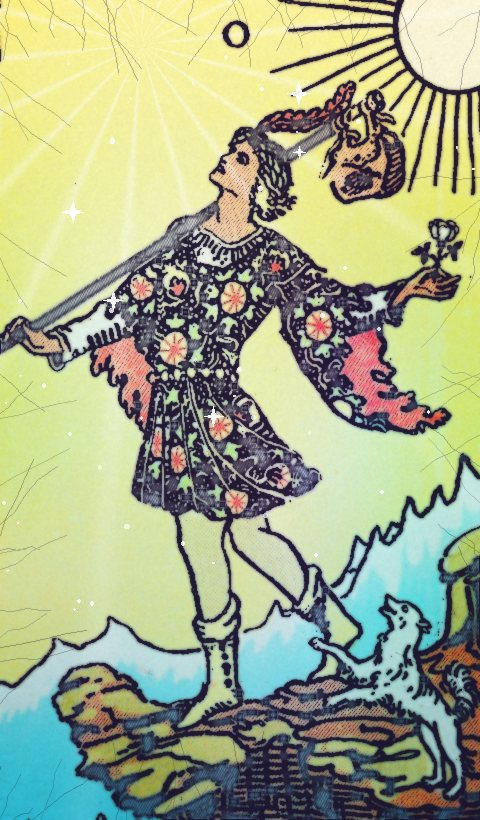

| Number | 0 |
|---|---|
| Element / planet | Air |
The Fool tarot card meaning: love, career and advice
| Keywords · Upright | beginnings, freedom, spontaneity, faith |
|---|---|
| Keywords · Reversed | recklessness, fear of the leap, chaos |
Upright
A leap into the unknown with a light heart. The Fool opens a new cycle: something is starting and you don't know yet where it leads, and that's fine. It asks for trust, curiosity and the willingness to learn along the way.
Reversed
Impulse without looking where you step. It can point to a rushed decision or, the other way round, to the fear that stops you from taking the first step. Check the map before you jump.
Love
A fresh relationship with no script, or the need for more air in the one you have.
Career and money
A new project, a change of direction or a learning phase. A good card for starting something.
Advice
Take the step, but pack the essentials.
Yes or no?
It's a “yes” card. Reversed, the answer softens to “maybe”.
Past, present and future
In the past: Some beginnings has already shaped your path. Look at what it taught you.
In the present: Right now it's about beginnings and freedom. That's the energy of the moment.
In the future: A time of faith is coming. Get ready to welcome it.
Frequently asked questions
What does The Fool mean in tarot?
A leap into the unknown with a light heart. The Fool opens a new cycle: something is starting and you don't know yet where it leads, and that's fine. It asks for trust, curiosity and the willingness to learn along the way. Take the step, but pack the essentials.
Is The Fool a yes or no card?
It's a “yes” card. Reversed, the answer softens to “maybe”.
What does The Fool reversed mean?
Impulse without looking where you step. It can point to a rushed decision or, the other way round, to the fear that stops you from taking the first step. Check the map before you jump.